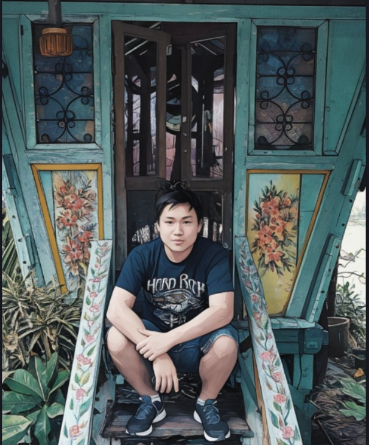
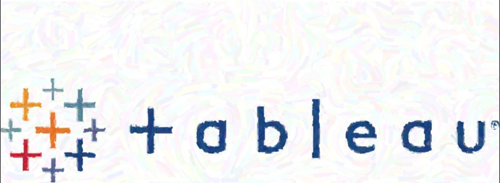

Steven Nathaniel Santoso — Jakarta, Indonesia
Computer science grad, data & web builder.
Previously a Data Engineering intern at Samsung Research Indonesia. These days I split my time between data analysis and web development.
Intro

I'm Steven — a computer science graduate from Binus University, with a minor in database technology. I spent time at Samsung Research Indonesia as a Data Engineering intern, building frontend features for an internal application in React, alongside regular bug fixing and testing.
Most of what I do sits between two things: making sense of data, and building the interfaces people use to see it. My work covers both sides — Tableau dashboards, Python notebooks, and full web applications.
Work

Tableau Visualizations
Dashboards built around COVID case trends, game sales, and department store performance — designed to make comparisons easy to scan without hiding the data behind decoration.
View on Tableau PublicPython Data Analysis
Notebooks focused on cleaning raw datasets and comparing variables to produce predictive results, charted out as clear, readable graphs.
View on GitHubWeb Development
Full-stack projects with a working database behind them, built with usability in mind — following the eight golden rules of interface design rather than just chasing a look.
View on GitHubActivity
Loading contribution activity…
About
I graduated in Computer Science from Binus University, with a minor in database technology. That's where most of my interest in data comes from — analytics, data engineering, anything that involves turning raw information into something useful.
Outside of coursework, I've taken Tableau and SQL training and worked through coding challenges to back it up with certificates. I also spent time in a student organization, which is where a lot of my Java practice and team leadership experience actually came from.